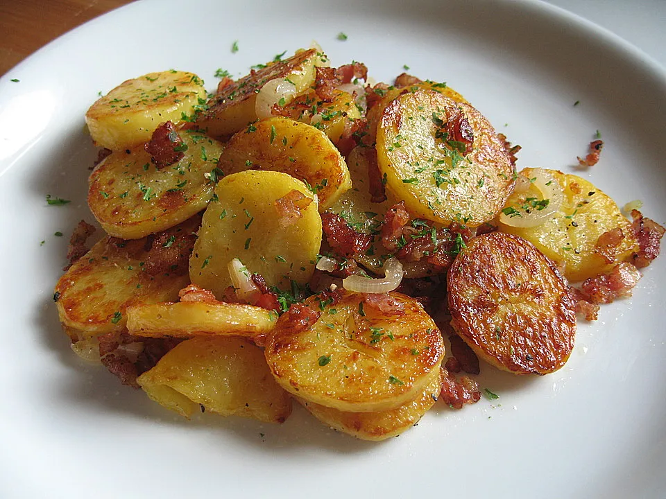

Bratkartoffeln
Leckere Bratkartoffeln in ca. 15min fertig. Lecker mit Salat
Für 2 Personen in ~10min fertig

0.5
kg
gekochte Kartoffeln von zu Hause
25
g
Butterschmalz oder Pflanzenöl
Salz und Pfeffer
Kartoffeln in Butterschmalz anbraten.